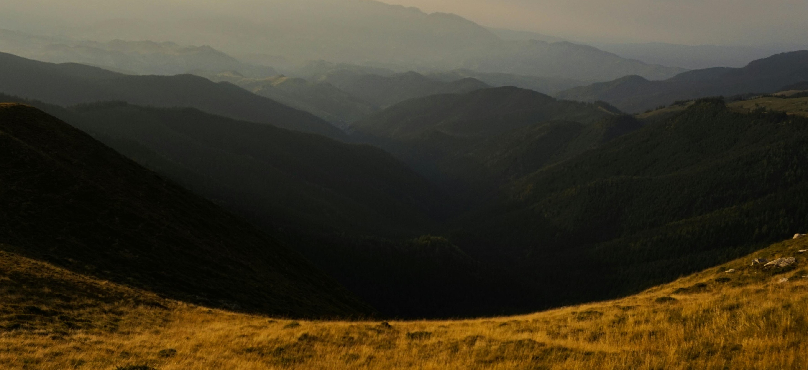
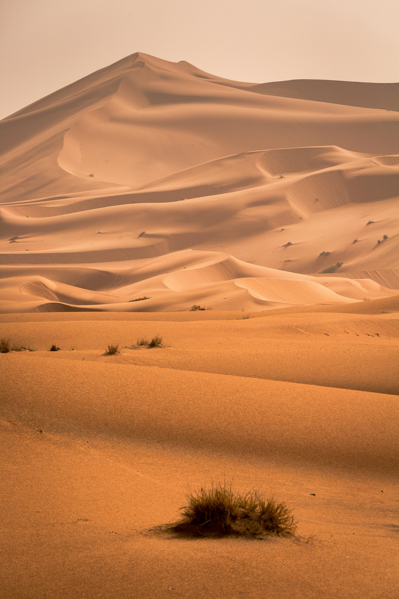
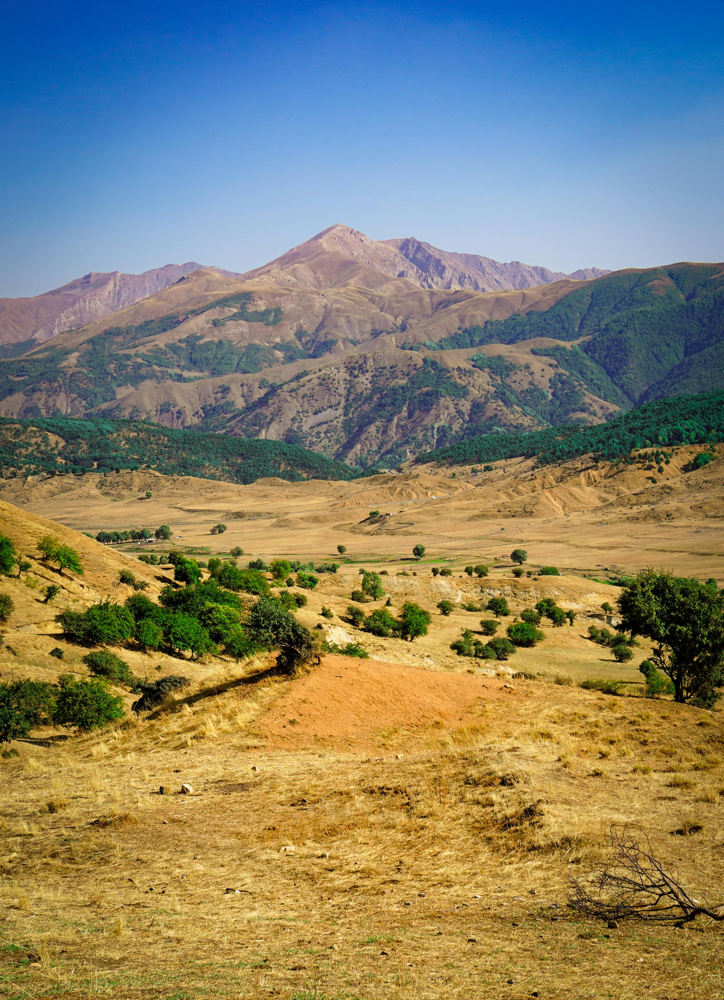

1. Mountains
.jpg)
Climate Regulation: Mountains influence weather patterns by causing air to rise, cooling and condensing, which results in precipitation.
Water Sources: Mountains act as sources of freshwater, feeding rivers and lakes with meltwater from glaciers and snow.
Natural Barriers: They serve as natural barriers to movement, both for wildlife and human activities, but also provide protection from winds and harsh weather.
2. Valleys
Agriculture: Valleys are often fertile regions due to the deposition of nutrients carried by rivers. They are prime locations for farming.
Habitat: Valleys provide habitats for various plant and animal species, offering water and shelter.
Human Settlements: Valleys are typically preferred for human settlements due to their availability of water and fertile soil.
3. Deserts
Resource Rich: Deserts are home to valuable resources such as minerals, oil, and natural gas, which are crucial for industry.
Unique Ecosystems: Despite their harsh conditions, deserts support unique ecosystems and species that have adapted to extreme temperatures and lack of water.
Tourism: Deserts are popular destinations for tourism, offering distinct landscapes like sand dunes, oases, and unique wildlife.
4. Plateaus
Geological Importance: Plateaus provide significant geological insights, as they are often formed by tectonic uplift, volcanic activity, or erosion.
Mining and Resources: Many plateaus contain mineral resources like coal, iron, and natural gas, making them important for mining activities.
Biodiversity: Plateaus often harbor unique biodiversity due to their varied ecosystems, ranging from grasslands to forests.
5. Rivers

Water Supply: Rivers are crucial sources of freshwater for drinking, irrigation, and industrial use.
Transport and Trade: Rivers have historically been used as important transportation routes for trade and travel.
Flood Control: Rivers help to control and regulate water flow, preventing excess water accumulation in nearby areas.